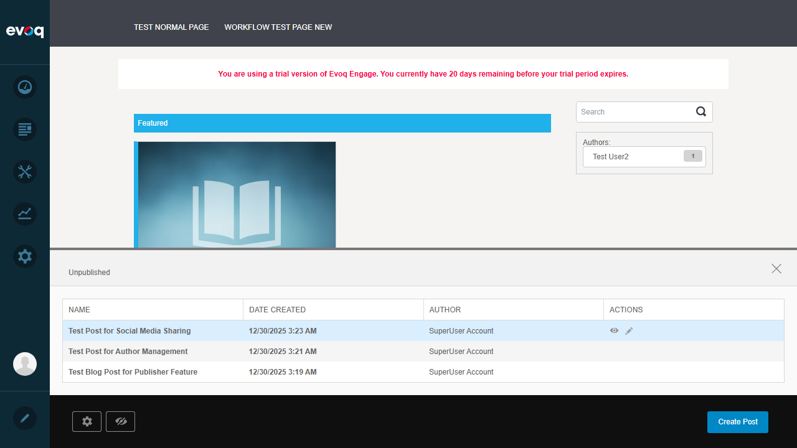
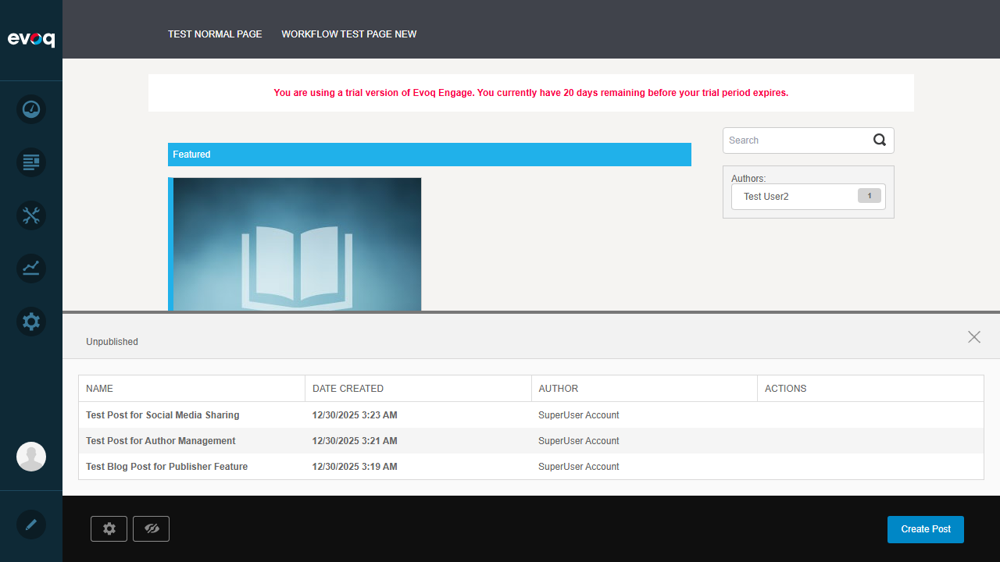
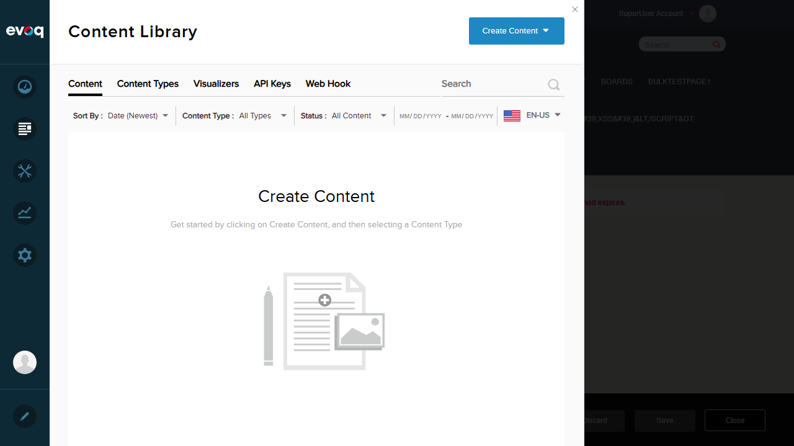

View and manage all unpublished posts including drafts and posts under review
Priority
High
UI Location
Content > Publisher > Unpublished Posts (accessed via edit bar on Publisher pages)
Test Date
January 6, 2026
Tested By
Claude (Automated Testing)
Test Summary
Testing of the Unpublished Posts Management feature for the Publisher module.
PASSED: 2
FAILED: 6
Note: Many suggested test scenarios are not implemented in the current UI. The Unpublished Posts panel provides basic list viewing and edit access only.
Test 1: View list of unpublished posts
PASS
Steps Taken:
Logged in as SuperUser (host)
Navigated to News page (has Publisher module)
Located the Unpublished panel at bottom of page
Verified the table displays unpublished posts
Expected Result: Display list of unpublished posts with relevant information
Actual Result: The Unpublished panel displays a table with columns: Name, Date Created, Author, Actions. Three unpublished posts are shown with all required information.
Screenshot: Unpublished Posts Panel
Screenshot: Actions on Hover

Test 2: Filter unpublished by status (draft/review)
FAIL
Steps Taken:
Examined the Unpublished panel for filter controls
Reviewed the source code (UnpublishedPosts.ascx)
Checked for dropdown or filter UI elements
Expected Result: Filter dropdown to show only drafts or posts under review
Actual Result: No filter functionality exists in the UI. The panel displays all unpublished posts without any filtering capability.
Issue: Filter by status (draft/review) is not implemented in the Unpublished Posts panel. The code review confirms no filter UI exists.
Screenshot: No Filter Controls Visible

Test 3: Sort unpublished posts by date
FAIL
Steps Taken:
Located the "Date created" column header in the Unpublished panel
Clicked on the column header to attempt sorting
Observed the table order before and after click
Expected Result: Clicking column header sorts posts by date (ascending/descending)
Actual Result: Clicking the column header does not trigger any sorting. The table order remains unchanged. Column headers are not interactive.
Issue: Sorting functionality is not implemented. Column headers are static text without click handlers.
Test 4: Bulk select posts for action
FAIL
Steps Taken:
Examined the Unpublished panel table structure
Looked for checkboxes in table rows
Checked for "Select All" option or bulk action buttons
Expected Result: Checkboxes to select multiple posts for bulk actions
Actual Result: No checkboxes or bulk selection capability exists in the panel. Each post can only be acted upon individually.
Issue: Bulk selection is not implemented. The code (UnpublishedPosts.ascx) shows a simple table without checkbox inputs.
Test 5: Quick edit from unpublished list
PASS
Steps Taken:
Hovered over a row in the Unpublished posts table
Observed that View and Edit action icons appeared
Clicked the Edit (pencil) icon
Verified the post editing page opened
Expected Result: Clicking Edit opens the post for editing
Actual Result: Hovering over a row reveals View (eye) and Edit (pencil) action icons. Clicking Edit successfully navigates to the post editing page where content can be modified.
Screenshot: Actions Visible on Hover
Screenshot: Post Edit Page Opened

Test 6: Delete draft posts
FAIL
Steps Taken:
Examined the Actions column in the Unpublished panel
Hovered over rows to reveal all available actions
Checked post edit page for delete functionality
Expected Result: Delete button or action available from the unpublished list
Actual Result: No delete button exists in the Unpublished list. Only View and Edit actions are available. The "Discard" option is only accessible from within the post edit page, not from the list view.
Issue: Delete action is not available directly from the Unpublished posts list. Users must open each post individually to access the Discard function.
Test 7: View workflow state details
FAIL
Steps Taken:
Examined the Unpublished panel table columns
Checked for workflow state/status information
Reviewed the UnpublishedPostDto and ViewModel code
Expected Result: Display workflow state (Draft, Under Review, etc.) for each post
Actual Result: The Unpublished panel only shows: Name, Date Created, Author, and Actions. No workflow state information is displayed. The code confirms that UnpublishedPostDto does not include workflow state data.
Issue: Workflow state is not displayed in the Unpublished posts list. Users cannot determine if a post is a draft or under review without opening each post individually.
Test 8: Export unpublished posts list
FAIL
Steps Taken:
Examined the Unpublished panel for export options
Looked for Export button, download link, or menu option
Reviewed the source code for export functionality
Expected Result: Export button to download list as CSV/Excel
Actual Result: No export functionality exists in the Unpublished Posts panel. There is no button, link, or menu option to export the list data.
Issue: Export functionality is not implemented in the Unpublished Posts panel.
Observations
Limited Feature Implementation: The Unpublished Posts panel is a basic list view with minimal functionality. Only viewing the list and accessing individual post editing is implemented.
Code Analysis: Review of UnpublishedPosts.ascx, UnpublishedPostDto.cs, and UnpublishedPostViewModel.cs confirms that:
The table only displays: Title, CreatedOnDate, AuthorName
Actions are limited to ViewUrl and EditUrl links
No filtering, sorting, bulk selection, or export code exists
UI Access: The Unpublished panel is accessed via the edit bar icons on pages containing the Publisher module (e.g., News page)
Workflow Status: The suggested "Filter by status (draft/review)" implies workflow state tracking, but this data is not included in the DTO or displayed in the UI
Suggested Enhancements: Many of the tested scenarios (filter, sort, bulk actions, delete from list, workflow state, export) would be valuable additions to improve content management workflow